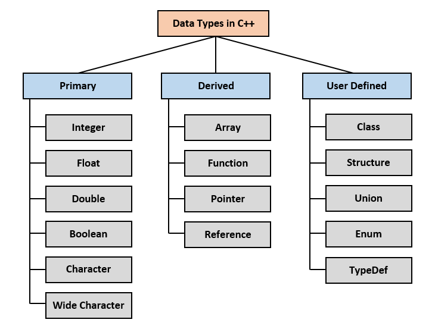

C++أنواع البيانات
مفهوم أنواع البيانات في C++
أي شيء تتعامل معه في C++ له نوع محدد و له طريقة خاصة للتعامل معه فيها; فمثلاً الأرقام لها طريقة للتعامل معها, النصوص لها طريقة للتعامل معها, الدوال لها طريقة للتعامل معها و هكذا.
في C++ يوجد أنواع بيانات بسيطة و جاهزة يمكنك التعامل معها سنطلعك عليها بتفصيل في هذا الدرس, و يوجد أنواع أخرى جاهزة ستتعلمها لاحقاً في الدورة لأنه لأنك غير مستعد لها بعد, كما تستطيع تعريف أنواع جديدة و هذا الأمر ستتعلمه لاحقاً أيضاً.
أنواع البيانات في C++
البيانات في C++ تنقسم لثلاث أقسام رئيسية كما في الصورة التالية.

أنواع البيانات الأساسية التي سنتعرف عليها و سنبدأ بالتعامل معها من الآن هي الأنواع الأولية ( Primary ) و التي تعتبر نفسها في أغلب لغات البرمجة.
و نود الإشارة إلى أننا سنتعرف على جميع الأنواع الأخرى المذكورة لاحقاً في الدورة عندما نصبح مستعدين لها.
ملاحظة
قد تجد مسميات أخرى تطلق على أنواع البيانات و هذا شيء طبيعي جداً, فمثلاً قد تجد أنواع البيانات الأولية ( Primary ) يقال لها أنواع بدائية ( Basic Data type ) أو أنواع تأتي ضمن اللغة مباشرةً ( Built-in ) و غير ذلك و لكن الفكرة هي نفسها و هذه كلها إختلافات غير مهمة على الإطلاق.
أنواع البيانات الأولية في C++
أهم أنواع البيانات الأولية في C++ و أكثرها استخداماً هي:
int - float - double - bool - char
النوع int
يستخدم هذا النوع لتخزين عدد صحيح, أي عدد لا يحتوي على فاصلة عشرية.
النوع float
يستخدم هذا النوع لتخزين عدد يمكن أن يحتوي على فاصلة عشرية.
يمكن لهذا العدد أن يحتوي على 7 أرقام بعد الفاصلة.
النوع double
يستخدم هذا النوع لتخزين عدد يمكن أن يحتوي على فاصلة عشرية.
يمكن لهذا العدد أن يحتوي على 15 رقم بعد الفاصلة لهذا يعتبر أكثر دقة من النوع float في العمليات الحسابية الدقيقة.
النوع bool
يستخدم هذا النوع لتخزين إما القيمة true و إما القيمة false.
النوع char
يستخدم هذا النوع لتخزين حرف أجنبي أو لتخزين عدد صحيح قيمته تمثل حرف نسبةً لرقم الآسكي كود ( ASCII Code ) الخاص به.
فمثلاً char x = 65; نفسها تماماً إن كتبت char x = 'A';.
سبب تحول الرقم 65 إلى الحرف 'A' في الذاكرة هو أنه في نظام ASCII الرقم 65 يمثل الحرف 'A'.
ملاحظة
النوع char يمكنه تخزين أي حرف أجنبي بدون مشاكل لأن الحرف الأجنبي يحتاج مساحة 1Byte من الذاكرة فقط حتى يتم تخزينه.
بينما الحرف العربي يحتاج مساحة 2Bytes من الذاكرة حتى يتم تخزينه بشكل صحيح.
لهذا السبب, عند التعامل مع الأحرف العربية يستحسن تخزين الحرف الواحد كمصفوفة نوعها char تتألف من عنصرين أو كنص عادي نوعه string.
لا داعي للقلق بشأن تخزين الأحرف العريبة لأن ما ذكرناه الآن سيمر معك في دروس لاحقة.
تحديد خصائص أنواع البيانات في C++
في C++ يوجد مجموعة كلمات يقال لها Data Type Modifiers يمكنك استخدامها لتحديد خصائص القيم التي يمكن تخزينها, مثل هي يمكن أن تكون قيم أصغر من صفر أم لا, بالإضافة إلى تكبير حجم المساحة التي يتم تخصيصها لكل نوع في الذاكرة مما يجعلك قادر على تخزين قيم أكبر.
الأنواع char و int و double يمكن تحديد خصائص القيم التي يمكن تخزينها فيها إذا أضفنا معها إحدى الكلمات التالية:
signed نضيفها لأحد الأنواع السابقة إذا أردنا تحديد أن قيمة المتغير لا يهم إن كانت أكبر, أصغر أو تساوي صفر.
unsigned نضيفها لأحد الأنواع السابقة إذا أردنا تحديد أن قيمة المتغير لا يمكن أن تكون أصغر من صفر.
short نضيفها لأحد الأنواع السابقة إذا أردنا تحديد أن حجم الذاكرة التي سيتم تخصيصها للمتغير هو 2Byte.
long نضيفها لأحد الأنواع السابقة إذا أردنا تحديد أن حجم الذاكرة التي سيتم تخصيصها للمتغير هو 8Byte.
معلومة تقنية
إفتراضياً الأنواع char - int - float - double جميعا تعتبر signed حتى لو لم تحدد ذلك بنفسك لهذا السبب تستطيع تخزين قيم أصغر من صفر فيها.
خصائص أنواع البيانات
الجدول التالي يوضح المساحة التي يحتاجها كل نوع في الذاكرة و القيم التي يمكن تخزينها فيه سواء تم استخدام النوع لوحده أو تم تحديد خصائصه.
| النوع |
الحجم في الذاكرة |
القيمة التي يمكن تخزينها |
char |
1Byte |
بين -128 و 127
|
unsigned char |
1Byte |
بين 0 و 127
|
short int |
2Bytes |
بين -32768 و 32767
|
unsigned short int |
2Bytes |
بين 0 و 65535
|
int |
4Bytes |
بين -2147483648 و 2147483647
|
unsigned int |
4Bytes |
بين 0 و 4294967295
|
long int |
4Bytes |
بين -2147483648 و 2147483647
|
unsigned long int |
4Bytes |
بين 0 و 4294967295
|
long long int |
8Bytes |
بين -9223372036854775808 و 9223372036854775807
|
unsigned long long int |
8Bytes |
بين 0 و 18446744073709551615
|
float |
4Bytes |
بين 1.17549e-038 و 3.40282e+038
|
double |
8Bytes |
بين 2.22507e-308 و 1.79769e+308
|
long double |
12Bytes |
بين 3.3621e-4932 و 1.18973e+4932
|
في حال أردت استخدام أي نوع مع تحديده خصائصه فيمكنك استخدام أي نوع تم ذكره في الجدول كالتالي.
مثال
// short int هنا استخدامنا النوع
short int x = 4545;
// long long int هنا استخدامنا النوع
long long int y = -50050012;
// unsigned long int هنا استخدامنا النوع
unsigned long int = 880045023;
هناك الكثير من الأنواع الجاهزة التي يمكنك استخدامها و لكننا تطرقنا لأشهرها و الأكثر استخداماً من بينها. و نود الإشارة إلى أن خصائص الأنواع المذكورة قد تختلف قليلاً بحسب المترجم المستخدم لتفسير كود لغة C++ للحاسوب و لكن هذا الأمر ليس شيء عليك القلق بشأنه خاصةً في هذه المرحلة.
في الدرس التالي ستتعلم جميع الأساليب التي تستطيع اتباعها لتعريف متغيرات تستخدم أنواع البيانات التي تعلمناها في هذا الدرس.


 محرر الويب
محرر الويب نظام الألوان
نظام الألوان محول الوحدات
محول الوحدات محلل عناوين الشبكات
محلل عناوين الشبكات{kind=link}